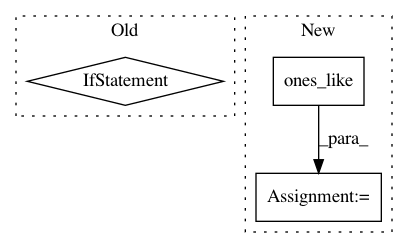

27cc6523d8b9705fb1fbd879847a8d540c8c9d02,trunk/SUAVE/Methods/Weights/Correlations/FLOPS/wing_weight.py,,find_sweep,#,332
Before Change
diff = lst_y - y
for i in range(len(diff)):
if diff[i] > 0:
return swp[i - 1]
elif diff[i] == 0:
return swp[i]
return swp[-1]
//// @ingroup Methods-Weights-Correlations-FLOPS
def get_spanwise_engine(propulsors, SEMISPAN):
After Change
// All initial sweeps are the root chord sweep
swps = np.ones_like(y)*swp[0]
for i in range(len(lst_y)-1):
e = lst_y[i]
swps[y>=e] = swp[i]
In pattern: SUPERPATTERN
Frequency: 3
Non-data size: 3
Instances
Project Name: suavecode/SUAVE
Commit Name: 27cc6523d8b9705fb1fbd879847a8d540c8c9d02
Time: 2020-10-01
Author: ebotero@stanford.edu
File Name: trunk/SUAVE/Methods/Weights/Correlations/FLOPS/wing_weight.py
Class Name:
Method Name: find_sweep
Project Name: tensorflow/ranking
Commit Name: 6bf3f51cd0a312da842157665663c2dad9983248
Time: 2021-01-29
Author: xuanhui@google.com
File Name: tensorflow_ranking/python/losses_impl.py
Class Name: ClickEMLoss
Method Name: _compute_latent_prob
Project Name: rail-berkeley/softlearning
Commit Name: 7537cc093489dc1b38d52c8b0f5d9dd543c8c7fe
Time: 2019-02-01
Author: hartikainen@berkeley.edu
File Name: softlearning/algorithms/sql.py
Class Name: SQL
Method Name: _create_svgd_update